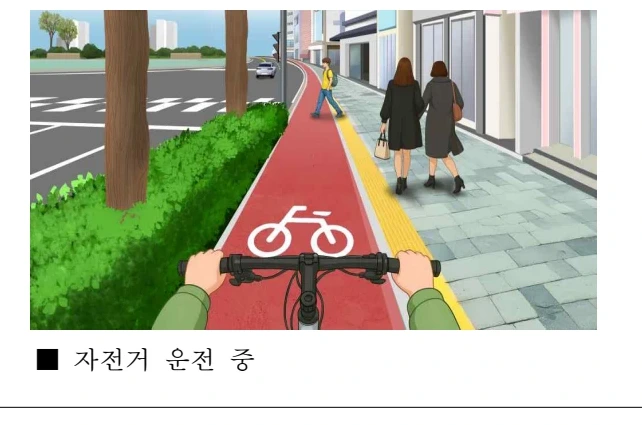

862. You are riding a bicycle. Which of the following are the TWO safest ways to ride?

- ①Stop in front of the pedestrian ahead.
- ②Since bicycles have the right of way, honk and overtake.
- ③There is a high risk of collision with the pedestrian ahead, so ride in the pedestrian area.
- ④Walk the bicycle to avoid a possible collision with the pedestrian on the right.
- ⑤Bicycles are not subject to speed limits, so pass through the dangerous area quickly.
Show answer
Answer
① Stop in front of the pedestrian ahead.
④ Walk the bicycle to avoid a possible collision with the pedestrian on the right.
Reference
Bicyclists riding on a bicycle/pedestrian road should drive slowly and look ahead carefully to monitor the movement of pedestrians. Bicycle drivers must be careful not to interfere with pedestrian traffic by riding to the edge of the road.
Reference text is a machine translation for study.